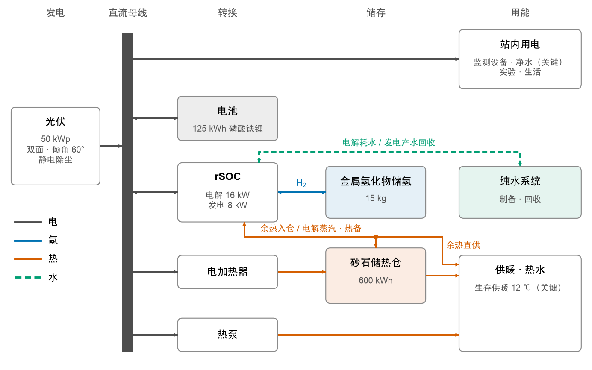
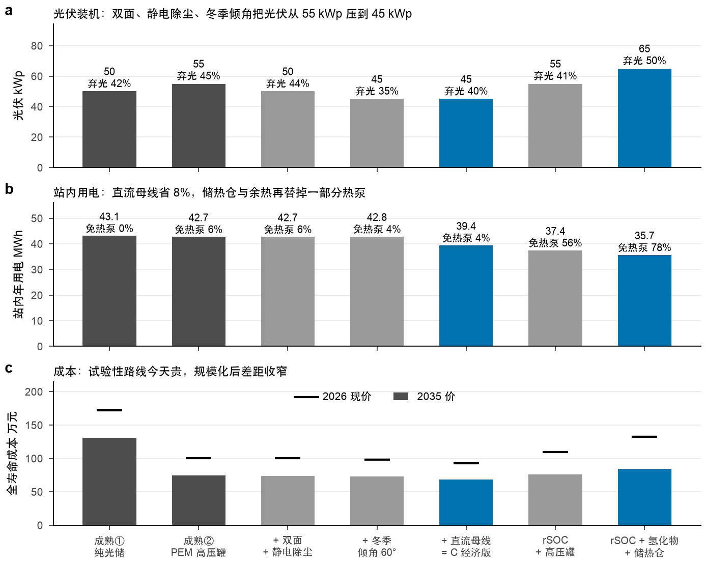
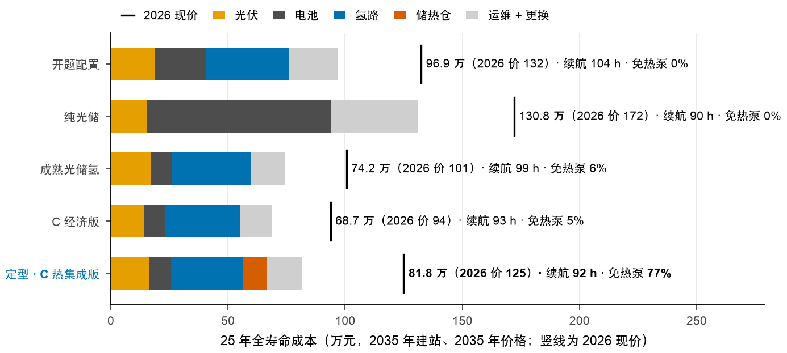
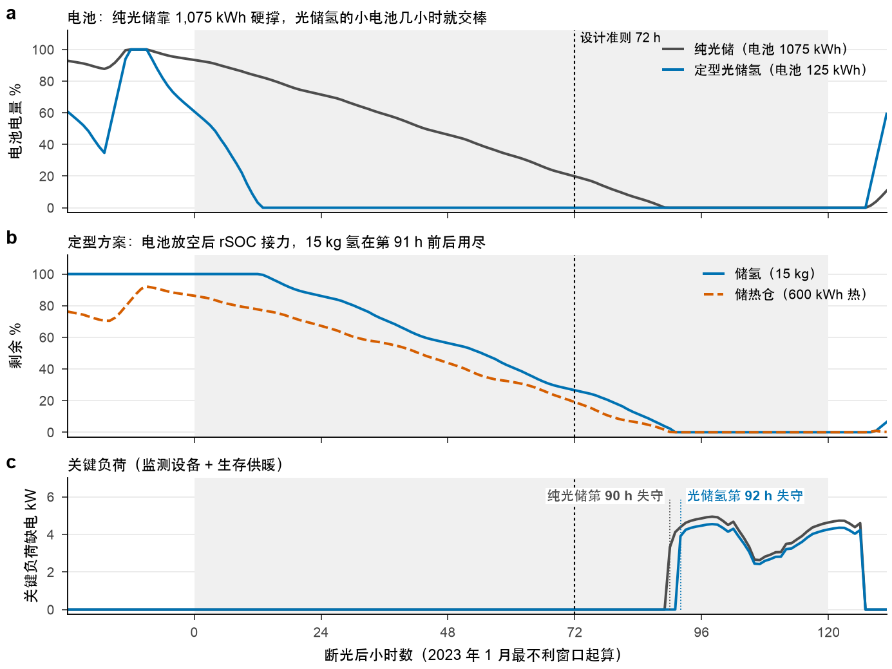
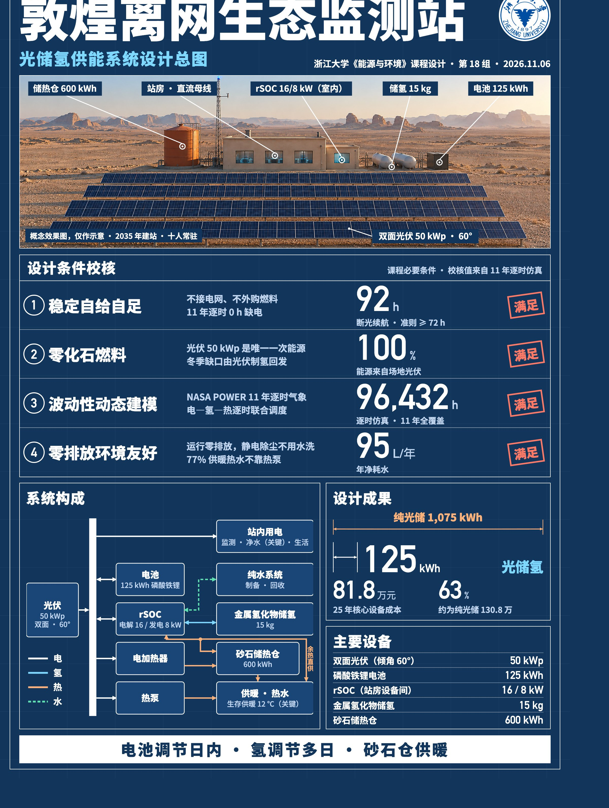
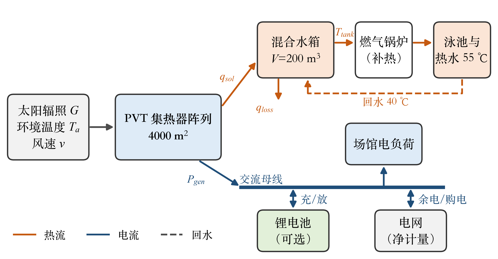
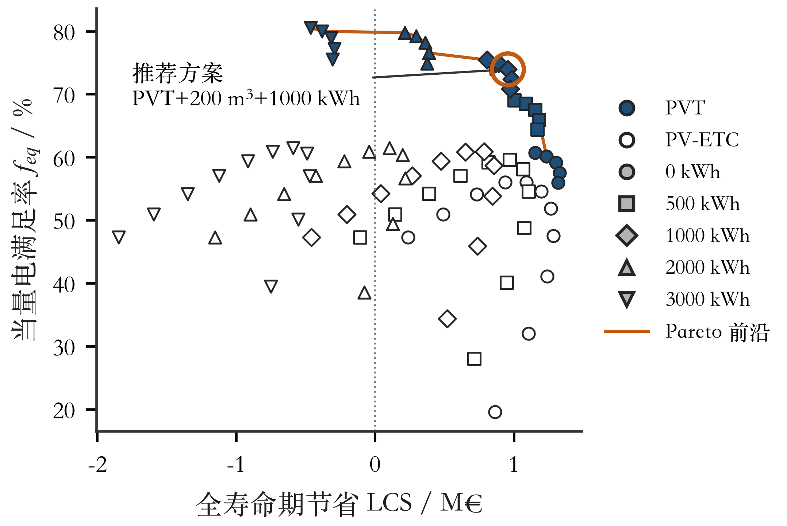

能源与环境系统工程概论¶
课程信息
- 学期：2026 年秋
- 小组项目：敦煌离网生态监测站光储氢供能系统设计
- 课程论文：游泳馆 PVT 热电联供与储能优化设计
这门课有两份大作业，都要用逐时数据把发电、用能和储能算出来。报告、海报和代码都放在这里了。想看我们怎么把成本算出五个答案的，直接跳到最后一节。
| 材料 | 内容 | 入口 |
|---|---|---|
| 设计说明书 | 小组项目完整报告，47 页 | 阅读 |
| 答辩 PPT | 网页版，按方向键翻页 | 打开 |
| 交互网页 | 看监测站逐时运行 | 打开 |
| 海报 | A3 设计总图 | 打开图片 |
| 源码与数据 | 仿真代码、气象数据和结果文件，7 MB | 下载 zip |
| 课程论文 | 个人论文，9 页 | 阅读 |

这里的文件去掉了成员信息和本地路径说明，技术内容没有改动。
小组项目 · 敦煌离网生态监测站¶
章节概览
题目：2035 年在敦煌周边建一座十人常驻、200 m² 的生态监测站，不接电网、不买燃料，全部能源来自场地上的太阳。
为什么难¶
敦煌太阳很好，麻烦的是连着几天没太阳的时候。电池管一天之内还行，真要扛多日阴天，容量大得不划算；氢能存很久，但转换损失大。我们要算的就是电池、氢和储热各管多长时间。
设计时定了两条硬标准：
- 用 2014–2024 年共 96,432 小时的真实逐时气象仿真，全程零缺电。
- 把历史上最差的三段低日照窗口换成 72 小时完全无光，监测设备和生存供暖（室温不低于 12 ℃）都不能断。
系统怎么搭¶


分工很简单：电池管日内，氢管多日，砂石仓管供暖。
| 环节 | 定型配置 | 作用 |
|---|---|---|
| 双面光伏 | 50 kWp，倾角 60° | 唯一的一次能源，倾角偏大是为了多发冬季的电 |
| 磷酸铁锂电池 | 125 kWh | 日内调节 |
| rSOC | 电解 16 kW，发电 8 kW | 一台设备既能制氢又能发电 |
| 金属氢化物储氢 | 15 kg，压力低于 3 MPa | 多日储能，低压、不用压缩机 |
| 砂石储热仓 | 600 kWh（热） | 收集弃光和余热，用于供暖 |
用到的七项技术¶
| 技术 | 成熟度（TRL） | 在这里干什么 |
|---|---|---|
| 可逆固体氧化物电池（rSOC） | 5–6 | 同一电堆制氢和发电，是氢热耦合的核心 |
| 金属氢化物储氢 | 6–7 | 低压固态储氢，用余热放氢 |
| 砂石储热仓 | 7–8 | 全站的热枢纽 |
| 静电无水除尘 | 4–6 | 替代人工水洗，省水 |
| 双面组件 | 9 | 利用戈壁的高反照率，背面也发电 |
| 直流母线 | 7–8 | 少一道交直流转换，站内用电更省 |
| 冬季倾角优化 | 9 | 把少发的电放到本来就弃光的夏天 |
结果¶


系统规模主要是靠组件、除尘、倾角和直流母线压下来的，氢负责解决多日储能。


主要结论
- 纯光储需要约 1,075 kWh 电池，加入氢之后电池降到 125 kWh。
- 按 2035 年价格，核心能源设备 25 年全寿命成本为 81.8 万元，约为常规光储的 63%。
- 72 小时零光照测试下，三个不利窗口中最短的关键负荷续航为 92 小时。
- 77% 的供暖和热水不靠热泵；年净耗水约 95 L。
- 算上建筑、冷热机电和工程费用的中档概算，整站初始预算 177.1 万元，25 年净现值 209.8 万元。


适用范围
rSOC 和金属氢化物的成熟度还不高，经济性依赖设备降价。以上数字只适用于报告设定的气象、负荷、模型和价格情景。
交互网页¶
答辩时用的网页，可以直接点。手机屏幕太小，建议单独打开。

课程论文 · 游泳馆 PVT 热电联供¶
章节概览
题目：意大利巴里一座游泳馆有 4000 m² 屋顶，既要电也要热水。这块屋顶该怎么铺，配多大的水箱和电池？
问题¶
光伏（PV）只发电，真空管集热器（ETC）只供热，两者并排就要分屋顶。PVT 组件把两件事放在同一块板上，单位面积的总产出更高。
已有研究只算了 25%、50%、75% 三档 PV–ETC 面积比，水箱容积也是固定的。我把面积比扫了一遍，水箱和电池容量也一起优化。


结论¶
主要结论
- 屋顶受限时，PVT 是满足率最高的单一技术：当量电满足率 59.1%，高于任意比例的 PV–ETC 组合（最高 56.2%），减排量也最高（560 t/a）。
- 没有储能时，电的即时满足率只有约 40%。配 1000 kWh 电池能升到 69.1%，但电池单价要低于约 200 €/kWh，才能同时提高全寿命期节省。
- 水箱超过 30–50 L/m² 后收益明显递减；夏季弃热是季节性过剩，日级储热解决不了。
- 推荐方案：PVT 4000 m² + 200 m³ 水箱 + 1000 kWh 锂电池，当量电满足率 73.9%，回收期 14.6 年。


模型对 PV 发电量的复现偏差为 +6.0%，对 PVT 发电量偏高 12.7%，所以 PVT 的电输出要当上限看。
一些碎碎念¶
上面那页写得好严肃呀！好像这个项目从第一天就很顺利很直接了。我是总负责人，可以作证，这依然是一次波折的开发历程。
什么叫换参数之后有五个答案啊！¶
开题稿的文件日期是 9 月 20 日，代码仓库第一次提交在 10 月 13 日晚上。
其实那晚八点半就定型了，全寿命成本 79.7 万，我以为这门课快结束了，到此为止了。第二天早上八点多，参数核实提交：原来 64 个参数是量级估计，一查，rSOC 涨四成，金属氢化物翻倍，光伏涨一半，折现率从 5% 变成 8%。同一条路线重新定型，108.6 万。79.7 这个数只存在了十二个小时。
桌上还有一条 87.5 万的 PEM 高压罐路线。两条都不想要，不到三小时后我们提交了重推的方案 C，顺手把建站年份从 2030 挪到 2035，价格分现价和预测两档。听着很像考不过就申请缓考hhh，好在两档都老实列了。这版 73.8 万，10 月 23 日进展汇报讲的就是它。
后两个答案 85.8 和 81.8 得单独说。先声明，这五个数的价格口径不全一样，我只是想说答案我们换过很多次。
氢差点失业？纳尼¶
10 月 31 日，组员的 13 条参数建议并进模型，重跑后年用氢从约 59 kg 掉到 3.6 kg。一个名字里带氢的系统，氢一年就上这么点班。（是不是不想干了）
逐个参数退回旧值之后，我们发现主因是 rSOC 冬季热备从 5% 改成了 9%。这个 9% 查得很准，于是我的设计露馅了。保温箱放在室外，热全散给戈壁（还是太相信ai了），长阴天先把砂石仓抽空，系统只能多装光伏硬顶。
解决办法朴素得有点丢人：把箱子搬进屋。热备散热约八成抵扣供暖，少装 10 kWp，省 4 万，年用氢回到 14.4 kg。提交时间是 11 月 1 日凌晨两点半，此刻距离我们结题11.3（原本预估）原来越近。
原本打算再往里面塞点风能，比如vortex的无叶片风机，专注低风速发电。但冬夜平均风速 2.5 m/s，小风机一年发的电只有同价光伏的八分之一，后来做海报效果图时我定了条规矩（不烧心了），画面出现风力发电机就丢掉重来。太阳比想象中靠谱，11 年实测数据里根本没有一次连续 72 小时无光，我们严阵以待的那场黑暗是自己设计的（本质上是噱头）。
转折点·四（bushi¶
- 文献打捞员：从戈壁反照率一路查到储能变流器，提了 13 条建议，10 月 31 日晚连一篇德文硕士论文的原文都捞了上来。上面那个 9% 参数改变了时间线。
- 台词总监：10 月 14 日晚重写了网页的文案，还写出演示脚本，第几秒滚到哪、说什么、手指哪里全排好。我的网页从那天起才会说人话。
- 说明书总编：10 月 30 日 23:58 传上来 26 页润色稿，现在 47 页的设计说明书就以它为底稿。（我现在ai泔水读的多了反而，不知道哪些话很“ai”）
- 海报担当：做出了自带“编辑文字”按钮的 A3 海报。11 月 2 日夜里我提交了 10 次海报，还把课程的四个必要条件画成过四层岩层，最后交上去的那版，底稿还是海报担当的修改版。
- 我自己：好吧这几个称号太二了，ooc致歉。最爱在夜里疯狂推进项目的男孩子一枚，把定型数字改来改去，然后去群里说 main 已更新。
给学弟学妹（去和组员商议，核验参数后修改报告，适当怀疑ai，但不要与他为敌）¶
- 先核参数再定型。设备单价和折现率最先查，它们一动，主推路线都可能换。（这句话是不是又有点ai？
- 开跑前把选型规则写进代码，比如续航不低于 90 h，再比成本。不写死，你会挑好看的数字。（不是让大家调参数哦哦）
- 调参的停止线：成本差不到 1% 就算同价，别再磨，单价本来就是估的。结题前一周冻结参数！！！我们 11 月 1 日还在改设计，别学。
- 报告数字全用脚本生成。说明书的数字是宏，重跑自动更新；已经不是匠心手改ppt的时代了
- 重跑后别只看总成本，看每个部件一年干了多少活。3.6 kg 就藏在这种不起眼数里。差点被你杀死啊混蛋！
- 图注逐条对数据。
- 建参数台账，每项标有原文、设计设定或估的，只读过摘要不算有原文。
- 答辩教室按断网的 Windows 准备，网页和 PPT 做成离线单文件。